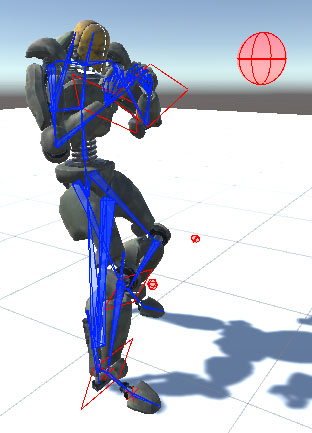

InterLiminal (WIP Page)

This is my current project that I am undertaking. To challenge myself more I am trying to learn more about the unity animation system to create an animation with the theme of Liminal space, before starting this project I had absolutely zero experience in animation in unity.
By the end of this project I am hoping to have a deep understanding of how animations can be made in unity, along with expansive knowledge on lighting, shaders and unity cameras.
My Progress so far.
The animation will take place in space. So with this in mind I needed a model for a spaceship. I used some tutorials online to help teach myself blender to make a model for a ship.
For the story I have in mind also I can't use a human, so instead I will use a robot from the Unity Asset Store. While using this model to learn the basics of animation, I realized I would need to use the unity rig animation system. Luckly the model already had a rig, so this proccess wasn't too dificult however I learned a lot more about animation in unity not just in cinematics but also in game development through this.
